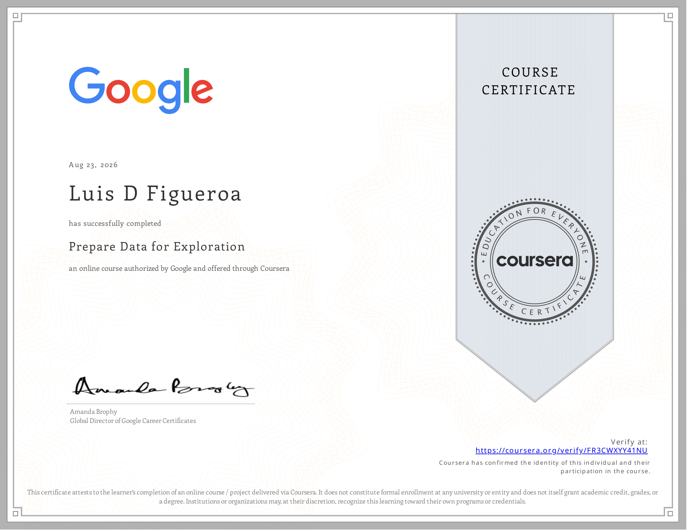
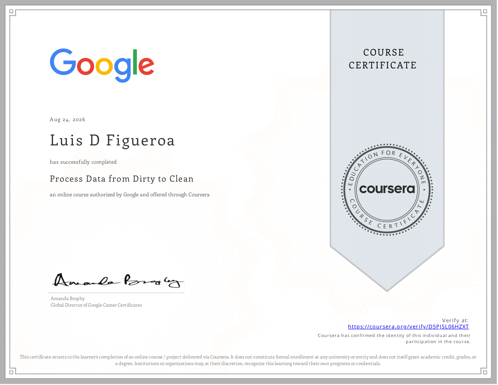
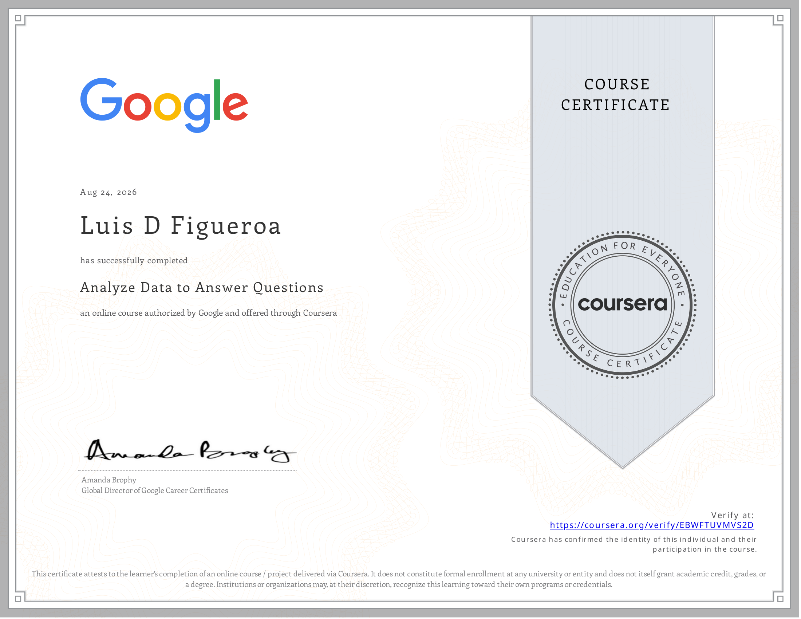
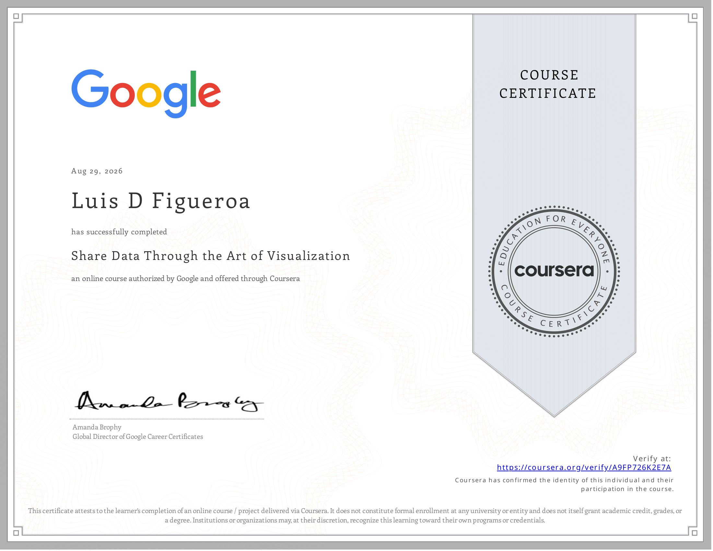

6 of 9 courses complete
Completed · August 2026
Foundations: Data, Data, Everywhere
Core data analytics concepts and vocabulary, an analytical thinking self-assessment, and how spreadsheets, SQL, and Tableau support the data analysis process. (Course 1)
Completed · August 2026
Ask Questions to Make Data-Driven Decisions
The problem-solving roadmap, using data in decision-making, spreadsheet basics for entering and organizing data, and structured thinking. (Course 2)

Completed · August 2026
Prepare Data for Exploration
Factors to consider when collecting data, biased vs. unbiased data, how databases function, and best practices for organizing data. (Course 3)

Completed · August 2026
Process Data from Dirty to Clean
Types of data integrity and risk, basic SQL functions for cleaning string variables, building SQL queries, and verifying data cleaning results. (Course 4)

Completed · August 2026
Analyze Data to Answer Questions
Organizing data with sorts and filters, converting and formatting data, SQL queries across multiple tables, and spreadsheet functions for calculations. (Course 5)

Completed · August 2026
Share Data Through the Art of Visualization
Using visualizations to communicate results, Tableau as a visualization tool, data-driven storytelling, and effective presentation practices. (Course 6)
Not Started
Introduction to Data Analysis Using Python
How data professionals use Python, basic syntax and semantics, loops and control statements, string manipulation, and core data structures. (Course 7)
Not Started
Google Data Analytics Capstone: Complete a Case Study
Applying the full data analysis process to a real case study and building a portfolio piece for recruiters, plus AI-assisted skills across cleaning, formulas, visualization, and code. (Course 8)
Not Started
Accelerate Your Job Search with AI
Using tools like Career Dreamer and Gemini to explore roles, organize applications with Google Sheets, build a resume and search plan, and prep for interviews. (Course 9)